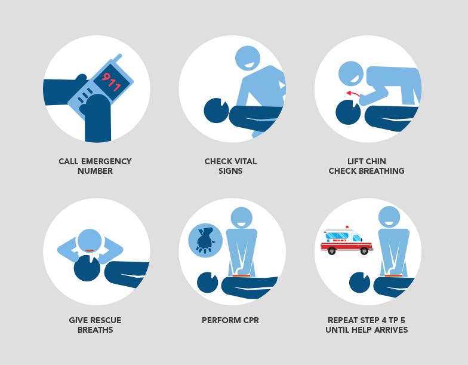

SYMPTOMS
* Chest pain or discomfort
* Upper body pain
* Shortness of breath
* Sweating
* Nausea or vomiting
* Fatigue
* Dizziness
FIRST AID
1. The person may have persistent, vice-like chest pain, which may spread to their arms, neck, jaw, back or stomach.
This pain happens because a blockage stops blood getting to the heart muscle. The pain will not ease with rest.
2. Call 999 as soon as possible.
If you can’t call 999, get someone else to do it. The person needs medical help as soon as possible.
A heart attack can be very serious and needs immediate attention.
3. Help the person to sit down.
Ensure they are comfortable – for example, sitting on the floor and leaning against a chair or a wall.
Sitting will ease the strain on the heart. Sitting them on the floor also means they are less likely to hurt themselves if they collapse.
4. Reassure them while you wait for the ambulance.